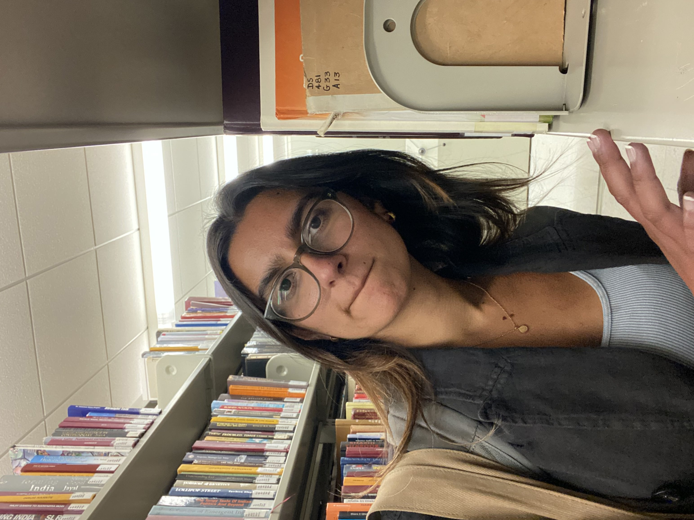
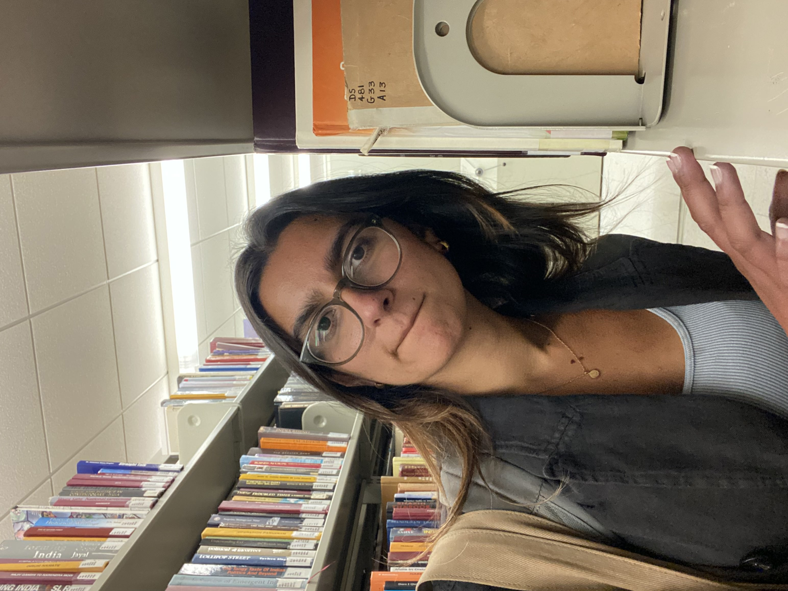

Graduation (a photo essay)
5/11/24
After four years of sheer tumult, I graduated. I feel like
I just went through war. I took FIVE final exams last week. And the last
one was from 7pm to 10pm on a class I DIDN'T EVEN TAKE THIS SEMESTER. And now I have a
desire to be submerged in a body of water for a bit.
When I got into this school, I cried.
Throughout my four years here, I also cried.
Several professors touched my life deeply. I told some of them, I didn’t tell others.
I made friends, found myself, lost myself, lost friends, made acquaintances, lost acquaintances,
found myself again, I think.
During covid, I saw an article that said this school
will beat the shit out of you but you’ll come out more resilient. It's true, although I
can't confirm the resilient part yet.
This Little Miss Sunshine quote comes to mind. Here's the scene.
Dwayne: I wish I could just sleep until I was eighteen and skip all this crap - high school and
everything - just skip it.
Frank: Do you know who Marcel Proust is?
Dwayne: He's the guy you teach.
Frank: Yeah. French writer. Total loser. Never had a real job.
Unrequited love affairs. Gay. Spent 20 years writing a book almost no one reads.
But he's also probably the greatest writer since Shakespeare. Anyway, he uh...
he gets down to the end of his life, and he looks back and decides that all those years
he suffered, those were the best years of his life, 'cause they made him who he was. All
those years he was happy? You know, total waste. Didn't learn a thing. So, if you sleep
until you're 18... Ah, think of the suffering you're gonna miss. I mean high school? High
school - those are your prime suffering years. You don't get better suffering than that.
Here are some things I’ll miss.
Berkeley time
North Berkeley


The rays of sun in Doe
Cheeseboard pizza - the only pizza I will forget about my lactose intolerance for
This bench
The main stacks DS section


 

Moffit in the morning

Strada
ISAS events
This book box where I got the NYT every morning

This set of stairs that I ran up every morning

The RSF; my dear, sometimes disgusting, RSF
My email account
Looking at people be. I saw a girl riding her skateboard with her arms flailing down a hill in near Grizzly Peak once and she looked like the most free person on the planet. Or how the sun pulls everyone out on the glade. I'll miss how much authencity is unquestionably accepted here. The weirder you are the better.


The rare sights of seeing people read books in the gym by the weights or on the treadmill.
All the little pieces - a street sign, a cafe, a table, a step that’s crooked and leaning out of the concrete that I walked past everyday, a locker, an outlet, a window I always looked at - that come together to form something close to home. I’ll miss all of those.